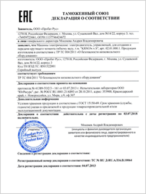

Очистка систем
вентиляции от пыли
Очистка воздуховодов
от жировых отложений
Дезинфекция
вентиляции
Микробиологическое
обследование СЭС
Своевременная очистка систем вентиляции от пыли, жира и мусора просто необходима любому промышленному или бытовому зданию. Скапливающиеся в воздуховодах отложения способствуют распространению множества заболеваний и отравлений, а также могут стать причиной пожара.
Компания ЭЛИСЕРВИС предлагает полный спектр услуг по очистке и дезинфекции систем вентиляции в Москве, Московской области и других регионах России. Использование профессионального оборудования и современных методов очистки позволяет нам выполнять проекты любой сложности быстро и качественно. Наша компания успешно прошла сертификацию Системы менеджмента качества ГОСТ ISO 9001:2015 (ISO 9001:2015).
Будем рады сотрудничеству с вашей организацией!
Очистка систем
вентиляции от пыли
Очистка воздуховодов
от жировых отложений
Дезинфекция
вентиляции
Микробиологическое
обследование СЭС
ОДЦ «Гелиос»
Выражаем благодарность ООО «ЭлиСервис» за качественно и в срок выполненную работу по очистке и дезинфекции систем вентиляции нашей школы. Работы проводились высококвалифицированными сотрудниками, при производстве работ использовалось высокотехнологичное оборудование. Без сомнений воспользуемся услугами этой организации и в следующий раз!
Исп. директор ОДЦ Гелиос - Николаев В. С